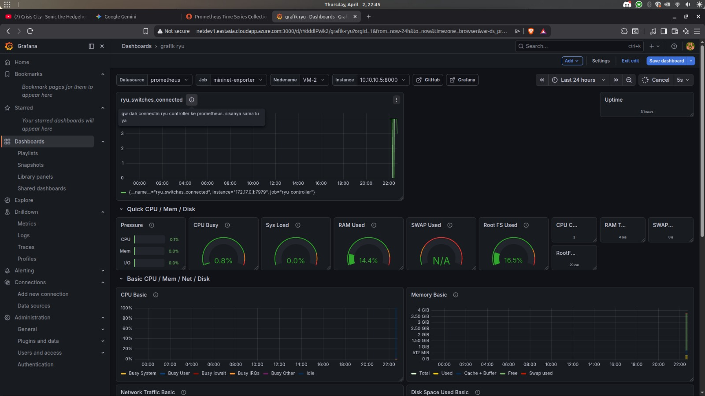
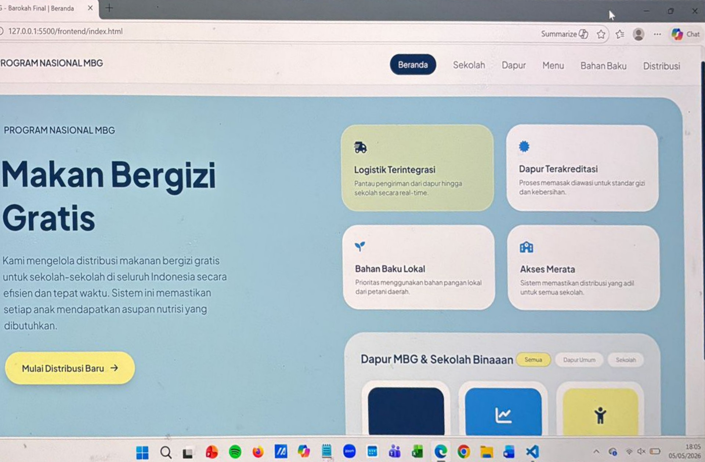
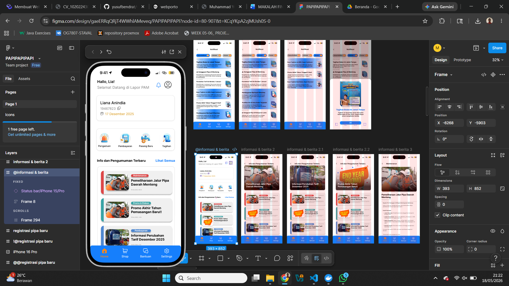

Information Systems Student
Muhammad Yusuf Ridwan Hidayat
Mahasiswa Sistem Informasi di Telkom University Bandung dengan minat mendalam di bidang Jaringan dan Teknologi Informasi. Memiliki pengalaman praktis dalam administrasi jaringan, infrastruktur server, dan analisis sistem.

What I Do
My Expertise
Network Engineering & Administration
Routing & switching, MikroTik configuration, Cisco CCNA concepts, dan hardware troubleshooting.
System Administration & Virtualization
Manajemen server berbasis Linux, kontainerisasi dengan Docker, dan VirtualBox.
Programming & Analysis
Pengembangan menggunakan bahasa pemrograman C# dan Python, serta pengimplementasian arsitektur data.
Career Journey
Professional Experience
Field Supervisor
CV. Gangsar Jaya Mandiri
- Bertanggung jawab melakukan pengawasan operasional di lapangan untuk memastikan kualitas kerja sesuai standar.
- Mengoordinasi tim lapangan dalam pelaksanaan teknis dan pelaporan progres harian.
Technical Intern
PT Telkom Akses (Indihome) Solo
- Melaksanakan magang di Telkom Witel Karanganyar pada divisi PSB (Pasang Baru) dan Gangguan.
- Melakukan instalasi jaringan internet pelanggan dan troubleshooting pada gangguan teknis di lapangan.
My Works
Featured Projects

SDN Monitoring Dashboard
Membangun dashboard monitoring jaringan secara real-time mengimplementasikan Software-Defined Networking (SDN) menggunakan Ryu Controller.

Integrasi Sistem MBG Barokah
Pengembangan sistem integrasi microservices untuk program Makan Bergizi Gratis (MBG) yang mencakup manajemen sekolah, menu, bahan baku, dapur, dan distribusi.

Mobile App PAM JAYA
Analisis proses bisnis dan perancangan sistem distribusi digital serta fitur aplikasi mobile PAM JAYA, mencakup pemodelan use case dan sequence diagram.
Learning Path
Education
Telkom University
S1 Sistem Informasi (Penerima Beasiswa OPES)
SMK Telkom Sandy Putra Purwokerto
Teknik Komputer dan Jaringan
Technical Expertise
Skills & Competencies
Memiliki pengalaman dan pemahaman kuat terhadap administrasi jaringan, manajemen infrastruktur server, dan alat-alat teknis pengembangan sistem. Keahlian utama meliputi:
- MikroTik (MTCNA Certified)
- Cisco Networking (CCNA)
- Linux Server Administration
- Docker & Containerization
- Python & C# Programming
- Virtualization (VMWare, VirtualBox)
- Network Troubleshooting
- Figma, SAP Logon & Visual Paradigm
Location
Jawa Tengah, Indonesia
Phone
+62 821 35125482
yusufiwan45@gmail.com